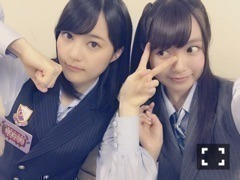
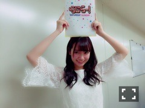
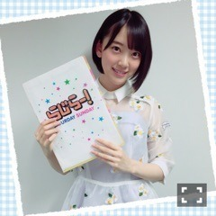

| 2016/06 16 Thu | ひめたん-0o0-その646 |
15日16日は
真夏の全国ツアースタート、そして
深川麻衣卒業コンサートでした！
静岡エコパアリーナ！
静岡でのライブは初めてということでしたが
まいまいらしい、ほんわかとした、
素敵な2日間でした( ˇωˇ )
まいまいと同じ参加楽曲を歌いながら
「一緒に歌えるのはこれが最後なんだな」
と思うと不思議な気持ちで
今まで何度も歌ってきた楽曲も
今日は何だか特別な気がしました。
メンバーが卒業していくのは寂しいけれど
最後はひとりで次の道を決めて
歩んでいく姿は
とてもかっこ良いな～と尊敬するし
まいまいにとって
乃木坂46が自慢の存在になれたら
素敵だなと思っています。
最後にステージ上で
ひとりずつお話したんだけど
その時に彼女から頂いた言葉、
ずっと私は忘れないよ！
改めて、卒業おめでとう。
本当にお疲れ様でした。

18日は京都で
2ndアルバムの握手会があります！
遊びにきてくださる皆さん
よろしくお願いします(^o^)
アルバム握手会ver.ということで
歌衣装着るよ～＊
なかなかないからレアなんだよねこれが。
15日発売のEX大衆では
生田×中元で対談させて頂きました！

ん、
ポーズさせてください生田さん( ´ ･ω･ ` )
構えてた私の右手が切ない......
私も落ち着いたらチェックしてみますが
ゆる～い対談になったような
記憶があります～＊
さらに、
告知できなくてごめんなさい！
16日は生田・橋本・中元で
100%ヒッツ！スペースシャワーTVプラス
「乃木坂46スペシャル -それぞれの椅子-」
に出演させていただきました～
こちらでは2ndアルバムのお話を
たくさんしてます(^o^)
3人とも参加楽曲が違うので面白いかなと。
リピート放送もあるので是非！
27(月) 25:00～26:00
そして、同じ3人で
100%ヒッツ！スペースシャワーTVプラス
「乃木坂46ミュージックビデオスペシャル」
にも出演させていただきます！
18(土) 23:30～24:30オンエア！
こちらはミュージックビデオについて
裏話とか、オススメのシーンとか
メンバーならではの視点で語ってます(^o^)
よろしくお願いします～＊

日曜の夜は、らじらー！サンデー
次回は声優アーツに渡部優衣さん、
乃木坂から能條愛未ちゃん、
和田まあやちゃん、伊藤かりんちゃんです。
前回のブログで書いたテーマの他にも
ふつおた、リクエストソングも
どんどん募集していますよ～
お便りの宛先はこちら
写真は乃木坂46公式Twitterから
拝借しました～
みんなライブのリハに
らじらー！特製ノートとかファイルとか
使ってくれて嬉しいですo(^o^)o


皆さんも是非ゲットして下さいね！
～お知らせ～
6/17 AKB新聞
6/18 スペースシャワーTVプラス
6/27 スペースシャワーTVプラス
7/6 3rd Birthday LIVE BD&DVD
WEB
掲載中 リアルサウンド
あといくつかお知らせがあります
解禁日まで少々お待ちくださいませ。
(＊´・ω・＊)
コメント(583)
2016/06/16 23:48